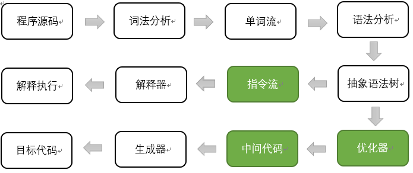
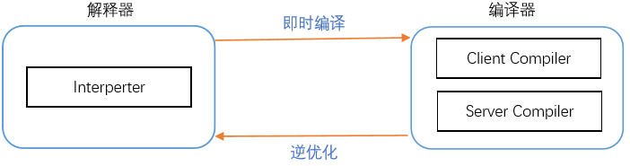
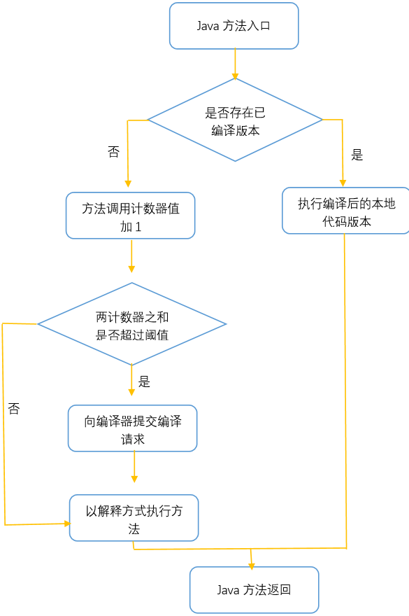

概述
本文章参考周志明的【深入理解Java虚拟机】
代码编译的结果从本地机器码转变成字节码，是存储格式发展的一小步，却是编译语言发展的一大步。
编译过程
java虚拟机的执行引擎在执行java代码的时候都有解释执行（通过解释器执行）和编译执行（通过编译器产生本地代码执行）这两种选择。
不论是解释还是编译，也不论是物理机还是虚拟机，大部分的程序代码从开始编译到最终转化成物理机的目标代码或虚拟机能执行的指令集之前，都会按照如下图所示的各个步骤进行：

其中绿色的模块可以选择性实现。很容易看出，上图中间的那条分支是解释执行的过程（即一条字节码一条字节码地解释执行，如JavaScript），而下面的那条分支就是传统编译原理中从源代码到目标机器代码的生成过程。
如今，基于物理机、虚拟机等的语言，大多都遵循这种基于现代经典编译原理的思路，在执行前先对程序源码进行词法解析和语法解析处理，把源码转化为抽象语法树。对于一门具体语言的实现来说，词法和语法分析乃至后面的优化器和目标代码生成器都可以选择独立于执行引擎，形成一个完整意义的编译器去实现，这类代表是C/C++语言。也可以把抽象语法树或指令流之前的步骤实现一个半独立的编译器，这类代表是Java语言。又或者可以把这些步骤和执行引擎全部集中在一起实现，如大多数的JavaScript执行器。
Javac编译
在Java中提到“编译”，自然很容易想到Javac编译器将.java文件编译成为.class文件的过程，这里的Javac编译器称为前端编译器，其他的前端编译器还有诸如Eclipse JDT中的增量式编译器ECJ等。相对应的还有后端编译器，它在程序运行期间将字节码转变成机器码（现在的Java程序在运行时基本都是解释执行加编译执行），如HotSpot虚拟机自带的JIT（Just In Time Compiler）编译器（分Client端和Server端）。另外，有时候还有可能会碰到静态提前编译器（AOT，Ahead Of Time Compiler）直接把*.java文件编译成本地机器代码，如GCJ、Excelsior JET等，这类编译器我们应该比较少遇到。
下面简要说下Javac编译（前端编译）的过程：
词法、语法分析
词法分析是将源代码的字符流转变为标记（Token）集合。单个字符是程序编写过程中的的最小元素，而标记则是编译过程的最小元素，关键字、变量名、字面量、运算符等都可以成为标记，比如整型标志int由三个字符构成，但是它只是一个标记，不可拆分。
语法分析是根据Token序列来构造抽象语法树的过程。抽象语法树是一种用来描述程序代码语法结构的树形表示方式，语法树的每一个节点都代表着程序代码中的一个语法结构，如bao、类型、修饰符、运算符等。经过这个步骤后，编译器就基本不会再对源码文件进行操作了，后续的操作都建立在抽象语法树之上。
填充符号表
完成了语法分析和词法分析之后，下一步就是填充符号表的过程。符号表是由一组符号地址和符号信息构成的表格。符号表中所登记的信息在编译的不同阶段都要用到，在语义分析（后面的步骤）中，符号表所登记的内容将用于语义检查和产生中间代码，在目标代码生成阶段，党对符号名进行地址分配时，符号表是地址分配的依据。
语义分析
语法树能表示一个结构正确的源程序的抽象，但无法保证源程序是符合逻辑的。而语义分析的主要任务是读结构上正确的源程序进行上下文有关性质的审查。语义分析过程分为标注检查和数据及控制流分析两个步骤：
- 标注检查步骤检查的内容包括诸如变量使用前是否已被声明、变量和赋值之间的数据类型是否匹配等。
- 数据及控制流分析是对程序上下文逻辑更进一步的验证，它可以检查出诸如程序局部变量在使用前是否有赋值、方法的每条路径是否都有返回值、是否所有的受查异常都被正确处理了等问题
字节码生成
字节码生成是Javac编译过程的最后一个阶段。字节码生成阶段不仅仅是把前面各个步骤所生成的信息转化成字节码写到磁盘中，编译器还进行了少量的代码添加和转换工作。 实例构造器
JIT编译
Java程序最初是仅仅通过解释器解释执行的，即对字节码逐条解释执行，这种方式的执行速度相对会比较慢，尤其当某个方法或代码块运行的特别频繁时，这种方式的执行效率就显得很低。于是后来在虚拟机中引入了JIT编译器（即时编译器），当虚拟机发现某个方法或代码块运行特别频繁时，就会把这些代码认定为“Hot Spot Code”（热点代码），为了提高热点代码的执行效率，在运行时，虚拟机将会把这些代码编译成与本地平台相关的机器码，并进行各层次的优化，完成这项任务的正是JIT编译器。
现在主流的商用虚拟机（如Sun HotSpot、IBM J9）中几乎都同时包含解释器和编译器（三大商用虚拟机之一的JRockit是个例外，它内部没有解释器，因此会有启动相应时间长之类的缺点，但它主要是面向服务端的应用，这类应用一般不会重点关注启动时间）。
二者各有优势：
当程序需要迅速启动和执行时，解释器可以首先发挥作用，省去编译的时间，立即执行；当程序运行后，随着时间的推移，编译器逐渐会返回作用，把越来越多的代码编译成本地代码后，可以获取更高的执行效率。解释执行可以节约内存，而编译执行可以提升效率。
同时解释器还可以作为编译器激进优化时的一个“逃生门”，让编译器根据概率选择一些大多数时候都能提升运行速度的优化手段，当激进优化的假设不成立，如加载了新类后类型继承结构出现变化，出现“罕见陷阱”时可以通过逆优化退回到解释状态继续执行（部分没有解释器的虚拟机中也会采用不进行激进优化的C1编译器-（在虚拟机中习惯将Client compiler称为C1，将Server Compiler称为C2）担任“逃生门”的角色），因此，在整个虚拟机执行机构中，解释器与编译器经常配合工作，如下图：

HotSpot虚拟机中内置了两个JIT编译器：Client Complier和Server Complier，分别用在客户端和服务端，目前主流的HotSpot虚拟机中默认是采用解释器与其中一个编译器直接配合的方式工作。
无论采用的编译器hiClient Compiler还是Server Compiler，解释器与编译器搭配使用的方式在虚拟机中称为“混合模式”（Mixed Mode）。
为了在程序启动响应速度与运行效率之间达到最佳平衡，HotSpot虚拟机还会逐渐启用分层编译的策略（1.7默认开启），分层编译根据编译器编译，优化的规模与耗时，划分出不同的编译层次，其中包括：
- 第0层，程序解释执行，解释器不开启性能监控功能，可触发第1层编译
- 第1层，也成C1编译，将字节码编译为本地代码，进行简单，可靠的优化，如有必要将加入性能监控的逻辑。
- 第2层（或2层以上），也成C2编译，也是将字节码编译成本地代码，但是会启用一些耗时较长的优化甚至会根据性能监控信息进行一些不可靠的激进优化。
编译对象与触发条件
运行过程中会被即时编译器编译的“热点代码”有两类：
- 被多次调用的方法。
- 被多次调用的循环体。
两种情况，编译器都是以整个方法作为编译对象，这种编译也是虚拟机中标准的编译方式。要知道一段代码或方法是不是热点代码，是不是需要触发即时编译，需要进行Hot Spot Detection（热点探测）。目前主要的热点 判定方式有以下两种：
- 基于采样的热点探测：采用这种方法的虚拟机会周期性地检查各个线程的栈顶，如果发现某些方法经常出现在栈顶，那这段方法代码就是“热点代码”。这种探测方法的好处是实现简单高效，还可以很容易地获取方法调用关系，缺点是很难精确地确认一个方法的热度，容易因为受到线程阻塞或别的外界因素的影响而扰乱热点探测。
基于计数器的热点探测：采用这种方法的虚拟机会为每个方法，甚至是代码块建立计数器，统计方法的执行次数，如果执行次数超过一定的阀值，就认为它是“热点方法”。这种统计方法实现复杂一些，需要为每个方法建立并维护计数器，而且不能直接获取到方法的调用关系，但是它的统计结果相对更加精确严谨。
在HotSpot虚拟机中使用的是第二种——基于计数器的热点探测方法，因此它为每个方法准备了两个计数器：方法调用计数器和回边计数器。
方法调用计数器用来统计方法调用的次数，在默认设置下，方法调用计数器统计的并不是方法被调用的绝对次数，而是一个相对的执行频率，即一段时间内方法被调用的次数。。当超过一定的时间限度，如果方法的调用次数仍然不足以让它提交给即时编译器编译，按这个方法的调用计数器就会被减少一半，这个过程称为方法调用计数器热度的衰减，而这段时间就称为此方法统计的半衰周期。
回边计数器用于统计一个方法中循环体代码执行的次数（准确地说，应该是回边的次数，因为并非所有的循环都是回边），在字节码中遇到控制流向后跳转的指令就称为“回边”
在确定虚拟机运行参数的前提下，这两个计数器都有一个确定的阈值，当计数器超过阈值溢出了，就会触发JIT编译。 触发了JIT编译后，在默认设置下，执行引擎并不会同步等待编译请求完成，而是继续进入解释器按照解释方式执行字节码，直到提交的请求被编译器编译完成为止（编译工作在后台线程中进行）。当编译工作完成后，下一次调用该方法或代码时，就会使用已编译的版本。
方法调用计数器触发即时编译的流程如下图：

回边计数器触发即时编译的流程和方法调用计数器流程基本相同，这里不再累述。
这个世界不会亏欠每一个在孤独中重生的人。